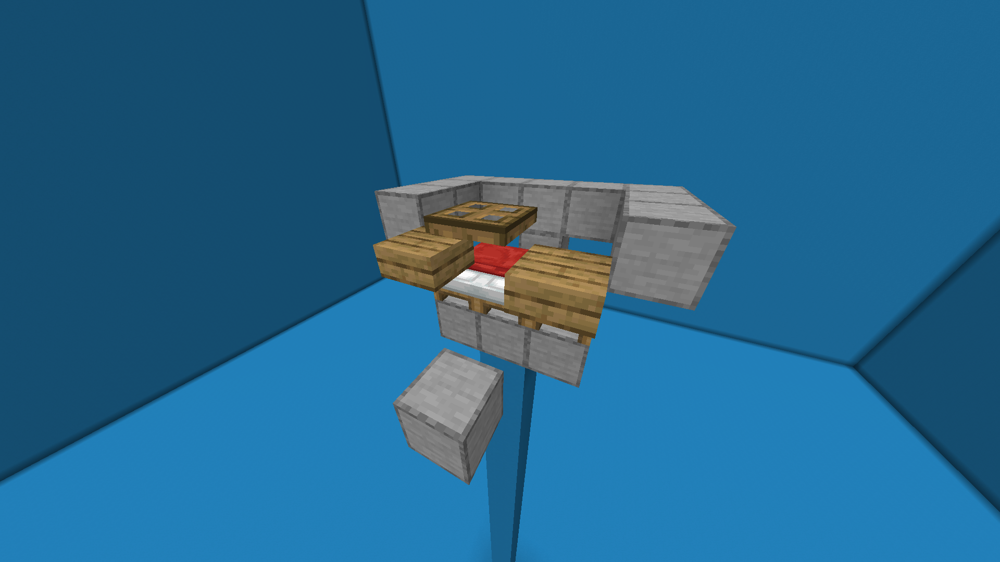
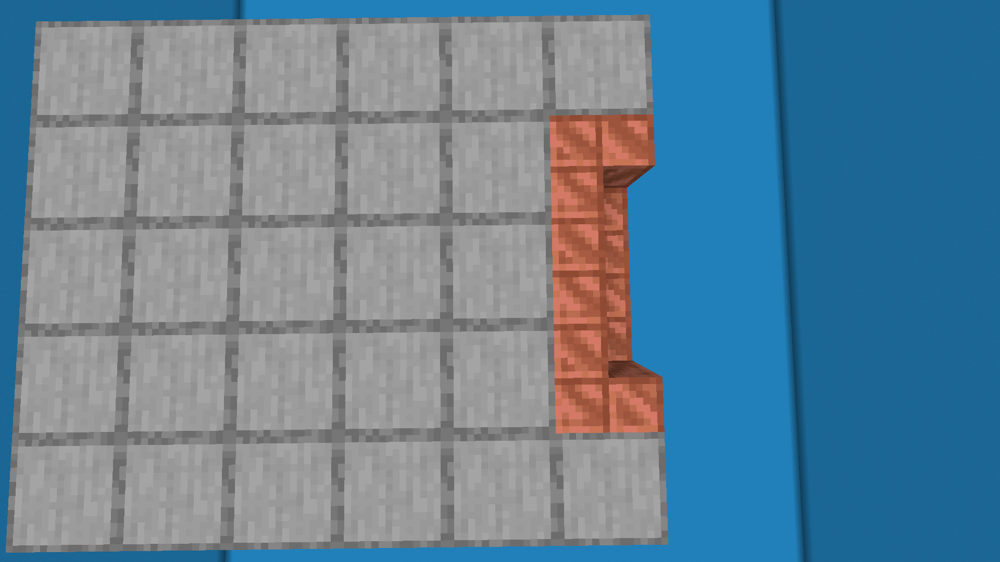
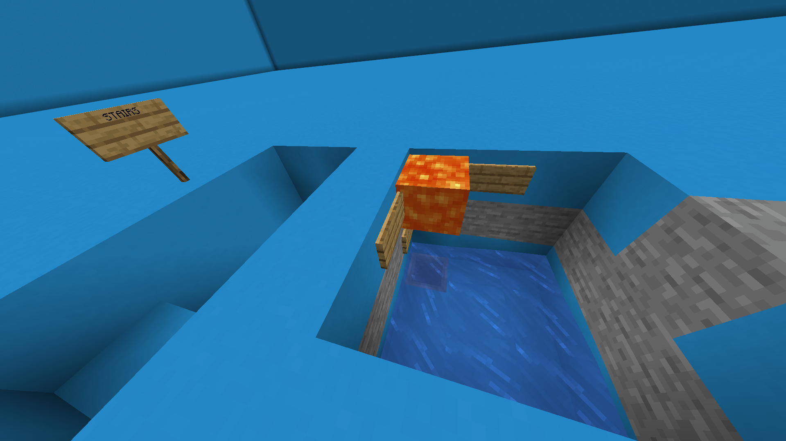

This iron farm is the simplest and cheapest one to build when you start your world.
Step 1
To start, find flat terrain or clear an area and build a 25-block tall pillar on top of it.
On top of the pillar, construct a 2 by 3 platform with three beds.
Place the beds, pillows facing the opposite direction of where your killing chamber will be.
Create a 3 block wall around the beds, except where the pillows are located.
Step 2
On the same level as the platform, place a block one-block away from the beds.
In the gap between the platform and the block, place slabs one block above the beds on your left and right.
The slabs should occupy the lower half of the block.
Above the bed where the pillow is located, place a temporary block, and attach a trapdoor to the side facing you.
The trapdoor should be attached to the top side of the block.

Step 3
Lure three villagers onto the beds and cover them with solid blocks.
Extend the roof to a 5 by 5 platform.
The platform should cover the walls and the extended block in front of the pillows.
Extend the two corner blocks on the backside opposite the pillows by one block.
Place the three stairs in the gap formed by the blocks in a U shape, facing the platform.

Step 4
Surround the platform with fences on all sides, leaving a gap where the stairs are.
The fences should be positioned one block out from the platform, floating in the air.
Not directly placed on the platform itself.
Next to the fences floating near the stairs, place two fencegates with a single-block gap between them in front of the stairs.
In the opposite corners, place two water sources.
The fencegates should be open.
Step 5
At ground level, position yourself directly under the center stair, facing away from your farm.
Walk two blocks and dig directly under yourself.
From there, dig a 3 by 3 hole with the block you're standing on as the edge.
Dig the hole 3 blocks deep in total.
Step 6
In the right corner on a wall, place a sign.
Above that sign, there will be lava, so to contain it, place two signs on both sides of it on the walls.
Then, dig that 2 blocks under the sign and place a chest with a hopper on top of it.
In the opposite corner, place water.
Leave the hole, place lava in its designated spot, and dig to your chest on the other side of the hole.

Step 7
At night, place a boat on top of the block in front of the trapdoor from step 2.
Lure a zombie to the boat, and you're done.
Your iron farm should start working now, and your iron and poppies should end up in the collection chest.